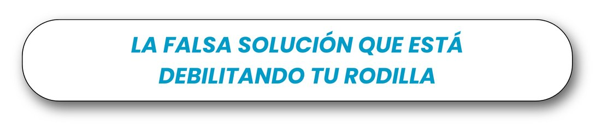

Si estás leyendo esto, es probable que lleves meses (o incluso años) conviviendo con ese pinchazo molesto al agacharte, esa rigidez al levantarte de la silla o el miedo constante al bajar las escaleras.
La mayoría de las personas cometen el mismo error cuando aparece este dolor: buscar el alivio inmediato a costa de la salud real de su rodilla.
Para eliminar los pinchazos y el dolor de forma definitiva, lo primero que debes hacer es romper con los 3 grandes mitos de la medicina tradicional y el entrenamiento convencional:
El dolor es una señal de alarma, no una orden de apagar el cuerpo. Cuando dejas de mover la pierna por miedo al pinchazo, el cuerpo entiende que ya no necesitas esos músculos. Resultado: en solo dos semanas de reposo, el cuádriceps y los demás músculos se inhiben y pierden masa muscular.
Una rodilla con menos músculo es una rodilla que tiene que soportar más impacto directo en el cartílago y la articulación. El reposo crónico no cura; debilita.
El hielo y las pastillas solo apagan el síntoma temporalmente (como poner una pegatina negra sobre el chivato del coche que dice que no tienes aceite). La inflamación es el mecanismo natural que utiliza tu cuerpo para enviar nutrientes y reparar el tejido dañado. Si cortas la inflamación de forma química o por hipotermia de forma sistemática, estás frenando y empeorando el proceso de recuperación real de la articulación.
Usar una rodillera de compresión de forma constante para hacer las tareas diarias o caminar acostumbra a tu sistema nervioso a una estabilidad artificial. Tu rodilla deja de esforzarse por estabilizarse sola porque un tejido elástico lo hace por ella.
A medio plazo, los tendones y los receptores de equilibrio de tu articulación se vuelven "vagos", aumentando el riesgo de un pinchazo más fuerte cuando te la quites.
Para volver a agacharte, caminar o usar escaleras sin miedo, tu estrategia no puede ser estirar la pierna, aplicar frío, reposar o tomar pastillas. Necesitas atacar dos pilares que la medicina tradicional ignora:
Tu rodilla no trabaja sola. Forma parte de una cadena. Si tu cadera está rígida por pasar horas sentado, o tu tobillo no se dobla bien, tu rodilla recibe el triple de presión en cada paso.
Necesitas devolver el movimiento natural a todo el conjunto (rodilla, tobillo y cadera) mediante estímulos diarios específicos. Si la articulación no se mueve libre, el pinchazo y el dolor aparecerán siempre.
Además, debes trabajar de forma aislada los grados de extensión y flexión que tu rodilla puede tolerar, para que cuando en actividades cotidianas, la rodilla llegue a ese punto, no se “asuste” y esté preparada para tolerarlo y no te genere dolor.
Para empezar a mejorar desde ya, sesiones de 20-30 minutos unos 2-3 días a la semana sería lo ideal.
El cartílago, los tendones, el menisco... y todas las demás estructuras de tu rodilla eposo; se curan con el estímulo correcto.
Imagina que tu rodilla ahora mismo solo tolera soportar 20 kg de presión antes de protestar con un pinchazo. Si tú dejas de moverte, esa tolerancia baja a 10 kg. Lo que debes hacer es empezar a darle dosis muy pequeñas de carga (peso y esfuerzo) mediante ejercicios sencillos en rangos donde no haya dolor. Así, semana a semana, tu rodilla vuelve a ser capaz de soportar tu peso corporal sin enviar señales de alarma, y por lo tanto, sin dolor.
Para empezar, el trabajo en casa, 2-3 días en semana durante 30-45 minutos puede ser muy buena opción.
La teoría es clara: necesitas mover todo el conjunto y empezar a cargar la rodilla de forma progresiva. Sin embargo, aplicar esto a ciegas sin saber qué ejercicios toleras puede empeorar el pinchazo y el dolor en general.
No existen ejercicios mágicos universales; existe el ejercicio adecuado para tu situación actual.
Para no dar pasos en falso ni empeorar el pinchazo, el siguiente paso es individualizar.
Ya tenemos el chat abierto en Instagram. Vuelve allí y dime:
¿Cuánto tiempo llevas con esta limitación? ¿Qué ejercicio o movimiento te genera el pinchazo más agudo?
Cuéntame acerca de tu situación actual y te indicaré qué tipo de progresión deberías empezar a seguir para recuperar la movilidad y cargar tu rodilla de forma segura.
(Nota: Mi equipo y yo revisamos los casos diariamente para asegurar que la recomendación sea la correcta).
¿Quieres que lo veamos aplicado a tu caso? Cada rodilla y cada proceso es distinto, y muchas veces pequeños ajustes marcan una gran diferencia.
Escríbeme sin compromiso